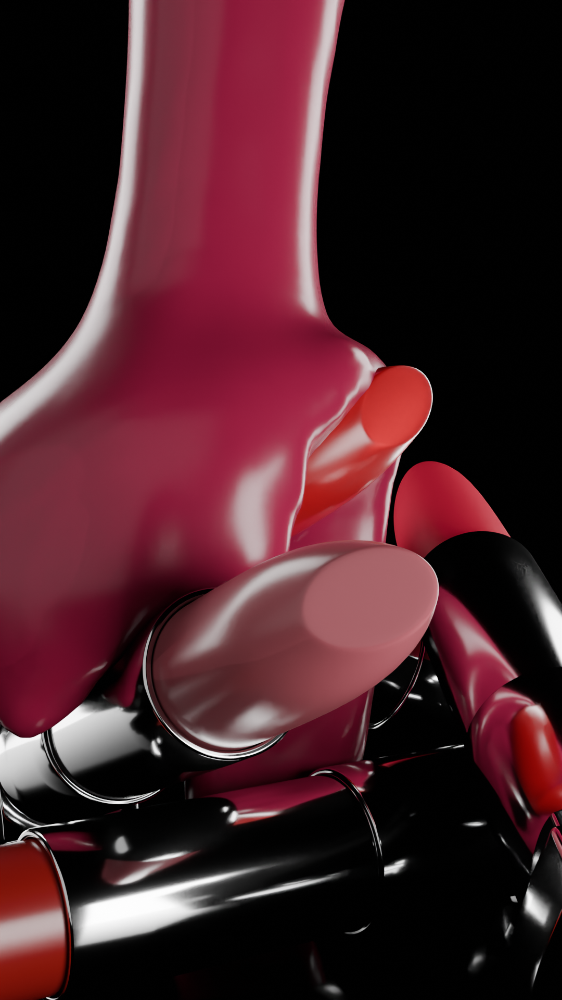
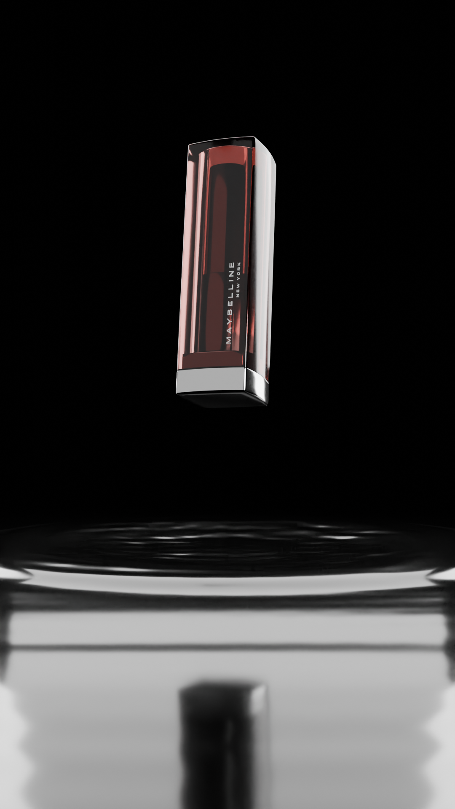
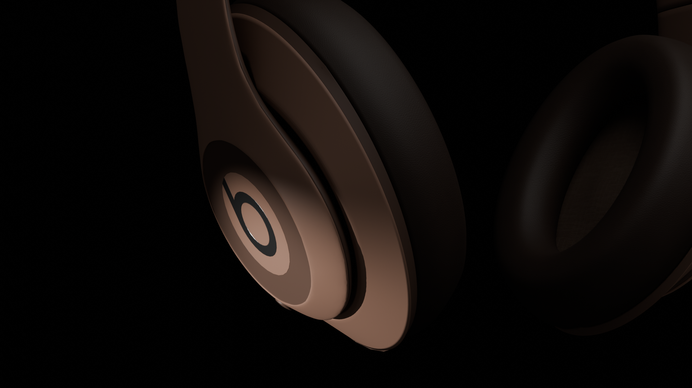
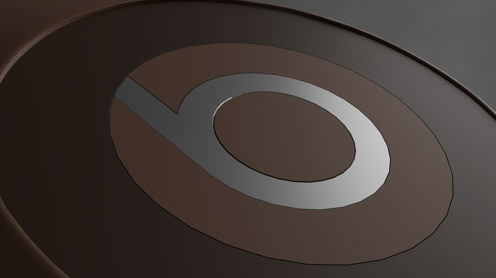
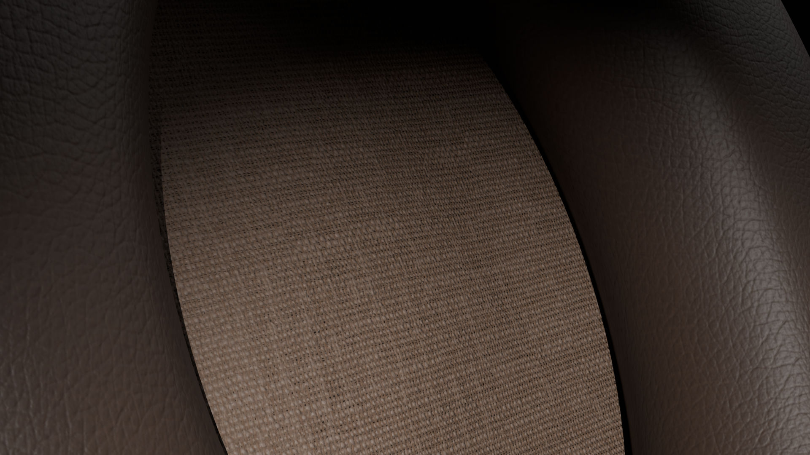
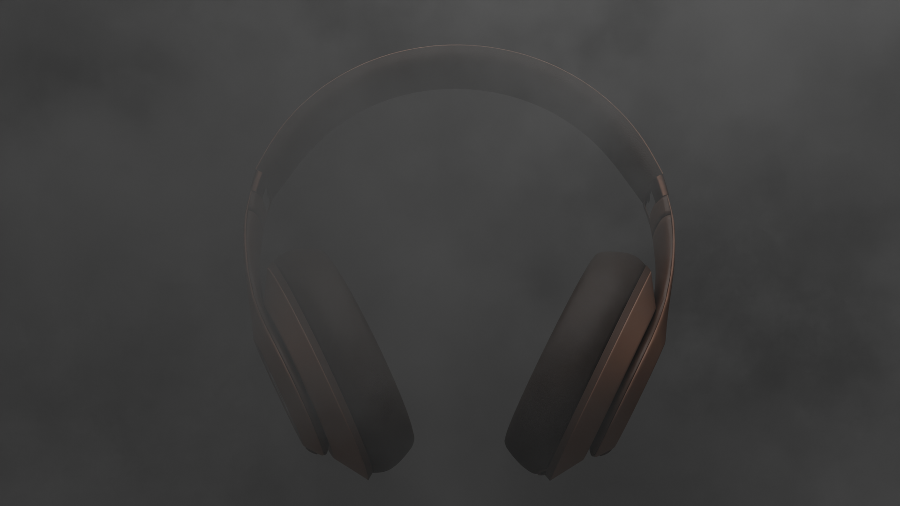

Ce travail de motion design 3D portait sur la gamme de rouges à lèvres Made for All Creamy Matte de Maybelline New York. L’animation, conçue au
format vertical, était destinée aux réseaux sociaux afin de toucher un public jeune et connecté.
L’animation met ainsi en valeur la texture crémeuse du rouge à lèvres, la diversité des familles de couleurs —
rouges, roses, bruns et violets — ainsi que la grande variété de teintes proposées par la gamme.




Cette animation 3D avait pour objectif de mettre en valeur le nouveau modèle de capsules
Nespresso Vertuo. Conçue au format vertical, elle était pensée spécifiquement
pour une diffusion sur les réseaux sociaux.
L'objectif était de mettre en avant l’ensemble des atouts
de la gamme : variété de tailles, richesse des goûts et qualité du café.
L’animation illustre ainsi que la gamme Vertuo a le potentiel de séduire tous les amateurs de café.


Ce projet marque ma toute première tentative d’animation 3D dédiée à la communication visuelle.
L’idée était d’imaginer une publicité fictive autour d’une collaboration entre Beats by Dr. Dre et
PANTONE, à l’occasion du PANTONE Color of the Year 2025.
La nature du travail reposait sur la
modélisation 3D et le texturing du produit, avec pour enjeu principal de rendre le Beats Studio Pro
le plus fidèle et réaliste possible.



